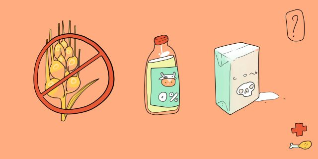

8 мифов о правильном питании, в которые пора перестать верить
Чтобы придерживаться здорового рациона, не нужно через силу следовать пищевым нормам, подсмотренным в сетевых марафонах.
1. Соль — «белая смерть»
Это преувеличение. Поваренная соль, которая используется на каждой кухне, состоит из двух элементов: хлора и натрия. Они играют важную рольElectrolyte Panel / MedlinePlus в обменных процессах организма: поддерживают баланс жидкости и уровень кровяного давления, отвечают за работу нервов и мышц. Поэтому здоровому человеку не стоит бросаться в крайности и самостоятельно назначать себе бессолевую диету. Подобный режим питания — временная мера, предписываемая людям с определёнными диагнозами. Например, резкое ограничение соли до 1,5–3 г в день назначаетсяПриказ Министерства здравоохранения РФ от 23 сентября 2020 года № 1008н «Об утверждении порядка обеспечения пациентов лечебным питанием» пациентам с хронической болезнью почек, при этом точный срок воздержания определяет врач на основе анализов.
2. Мёд и сахарозаменители полезнее сахара
Так называемые ПП‑аналоги привычных сладких блюд не содержат обычного белого сахара. В качестве подсластителя при приготовлении полезных тортов, блинчиков и печенья используются мёд, нектар агавы, сироп топинамбура или кокосовый сахар. Так вот, реальной пользы от подобных десертов нет.Всемирная организация здравоохранения действительно призываетРуководство по потреблению сахаров взрослыми и детьми / Всемирная организация здравоохранения к сокращению потребления свободных сахаров до менее 10% от общей суточной калорийности рациона. Специалисты считают, что эта мера помогает снизить риски развития ожирения, сахарного диабета, сердечно‑сосудистых заболеваний, кариеса, болезней печени и почек. Мёд, сиропы, нектары, соки и их концентраты, как и добавленный в продукты столовый сахар, входят в перечень свободных сахаров. Если вы просто замените привычный рафинад условно полезным подсластителем, но при этом не ограничите себя в сладком, чуда оздоровления не случится. Среди учёных нет и однозначного ответа на вопрос, как влияют на здоровье популярные низкокалорийные сахарозаменители. До сих пор неизвестно, что происходит с организмом, когда мозг получает сигнал о присутствии во рту сладкой еды, а доза сахара не поступает в кровь, и есть ли взаимосвязь между избыточным потреблением сахарозаменителей и риском развития диабета. Однако в 2020 году появилось исследованиеEloi Chazelas, PhD candidate Charlotte Debras, PhD candidate Bernard Srour, PharmD, PhD Léopold K. Fezeu, MD, PhD Chantal Julia, MD, PhD Serge Hercberg, MD, PhD Mélanie Deschasaux, PhD Mathilde Touvier, PhD. Sugary Drinks, Artificially‑Sweetened Beverages, and Cardiovascular Disease in the NutriNet‑Santé Cohort / Journal of the American College of Cardiology, которое доказало, что диетические сладкие напитки могут негативно влиять на метаболизм и состояние сосудов. А ещё заменители сахара могут исказитьEvidence for sugar addiction: behavioral and neurochemical effects of intermittent, excessive sugar intake / PubMed пищевое поведение. Человек перестаёт ограничивать себя в десертах, если они приготовлены на стевии или эритрите. Поэтому здоровые отношения с сахаром лучше строить на умеренности, а не на поиске альтернатив
3. Обезжиренные молочные продукты лучше обычных
Жиры — основной «строительный материал» в нашем теле. Они защищают клетки от механических повреждений, отвечают за теплоизоляцию и поддерживают иммунитет. Кальций и жирорастворимые витамины, которыми богаты молочные продукты, усваиваютсяLipid calcium interactions in experimental and human nutrition / PubMed в организме, если поступают вместе с липидами. В последние годы молочные жиры, долго считавшиеся табу в диетологии, реабилитируют. Так, например, опровергнутыM. Kratz , T. Baars, S. Guyenet. The relationship between high‑fat dairy consumption and obesity, cardiovascular, and metabolic disease / European Journal of Nutrition подозрения в том, что молочный жир способствует развитию ожирения и повышает кардиометаболический риск. А результаты научной работы учёных из Швеции, где потребление молочных продуктов — одно из самых высоких в мире, показалиKathy Trieu, Saiuj Bhat, Zhaoli Dai, Karin Leander, Bruna Gigante, Frank Qian, Andres V. Ardisson Korat, Qi Sun, Xiong‑Fei Pan, Federica Laguzzi, Tommy Cederholm, Ulf de Faire, Mai‑Lis Hellénius. Biomarkers of dairy fat intake, incident cardiovascular disease, and all‑cause mortality: A cohort study, systematic review, and meta‑analysis / PLOS Medicine, что диета, богатая молочными жирами, наоборот, может снизить риск болезней сердца и сосудов. Молоко, творог и йогурты с уменьшенным содержанием жира нет смысла употреблять даже тем, кто сидит на диете. Простая арифметика: разница в пищевой ценности кефира с 3,2% жирности и обезжиренного — около 30 ккал. Поэтому не стоит отказывать себе в любимом сыре, ряженке и даже сливочном масле
4. Норма воды — 2–2,5 л в день
Наверняка каждый слышал, что «врачи советуют» выпивать не менее 2 л чистой воды в день. Такой питьевой режим якобы способен избавить от лишнего веса, убрать отёчность, ускорить метаболизм и в целом омолодить организм изнутри. И всё это обязательно произойдёт просто потому, что мы на 70% состоим из воды. Так вот, строгая норма в 2–2,5 л чистой воды в день — миф. Всемирная организация здравоохранения не даётБрюс Гордон: людям надо расслабиться насчет своих питьевых привычек / РИА Новости никаких рекомендаций о том, сколько именно жидкости нужно пить человеку в течение дня. На потребности конкретного организма влияет слишком много факторов. Например, жажда заметно усиливается во время занятий спортом, после бурной вечеринки или отравления и даже когда на улице слишком жарко. Многие продукты питания уже содержат воду. Например, её довольно много в овощах и фруктах. К тому же в течение дня мы пьём чай, кофе, иногда едим супы. Насильное вливание в себя дополнительных литров жидкости может перегрузить почки и доставить ощутимый дискомфорт в привычной жизни, ведь в туалет придётся ходить заметно чаще. Лучшее решение — ориентироваться на собственную жажду и пить по требованию организма, а не тогда, когда трекер прислал напоминание.
5. Все био-, эко- и органик‑продукты полезны для здоровья
Подобные маркировки в идеале должны сигнализировать покупателю о том, что продукт создан согласно принципамНаучно‑методические рекомендации для сельскохозяйственных консультантов «Организация органического сельскохозяйственного производства в России» / Союз органического земледелия органического производства. То есть без применения синтетических агрохимикатов, минеральных удобрений и антибиотиков. Плюс это или минус, каждый покупатель решает для себя сам, однако некоторые исследователи серьёзно сомневаютсяAre Organic Foods Safer or Healthier Than Conventional Alternatives? / Annals of Internal Medicine, что органика полезнее обычной еды. Сознательный выбор таких продуктов — это скорее история об экологичном отношении к окружающей среде, нежели о правильном питании. Настоящие органические продукты должны пройти серьёзную сертификацию по международным стандартам. Например, российские сертифицированные производители собраны в госреестре. На деле же далеко не каждая упаковка с пометкой «Эко», «Био», или «Органик» содержит внутри продукт, который можно с чистой совестью назвать органическим. Очень часто на полках встречаются банальные чудеса маркетинга вроде соли без ГМО, которые добавляют очков производителю в глазах покупателя и стимулируют продажи. Если заботитесь о здоровом питании, не забывайте его главный постулат: рацион долженEat well / NHS быть сбалансированным, разнообразным и насыщенным витаминами и микронутриентами. Нет возможности покупать органические помидоры и фермерский творог? Сезонные овощи и молочные продукты из соседнего супермаркета ничем не хуже.
6. От перекусов можно поправиться
Перекус перекусу рознь. Если постоянно перехватывать шоколадные батончики, чипсы или печенье, то лишние килограммы не заставят себя долго ждать. Кроме очевидно вредных снеков следует отказаться и от псевдополезной еды, например батончиков‑мюсли или глазированных сырков. Они притупляют голод благодаря большому количеству сахара в составе. Глюкоза из таких продуктов высвобождается очень быстро и провоцирует инсулиновые скачки. Полезный перекус должен насыщать энергией, но не перегружать организм пустыми калориями. Лёгкий голод прекрасно утолят богатые клетчаткой и витаминами фрукты, овощи или ягоды. Небольшая горсть миндаля, фундука, грецких орехов или несолёных семечек поможет дольше чувствовать сытость и добавит в дневной рацион жирные кислоты. Творог и натуральный йогурт без сладких добавок снабдят организм белком и кальцием.
7. Глютен нужно полностью исключить из рациона
Глютен — пшеничный белок, который содержится в крупах и злаках. Заболевание, при котором у человека не вырабатываются ферменты для его расщепления, называется «целиакия», и, по официальным даннымЦелиакия / Глобальные практические рекомендации Всемирной Гастроэнтерологической Организации, ею страдает всего 1% населения Земли. Проблемы бывают также у людей, имеющих аллергию на пшеницу. Но не нужно искать в магазине безглютеновые продукты, если у вас нет индивидуальной непереносимости этого вещества. Решение о переходе на рацион без пшеничного белка следует принимать вместе с врачом, а не потому, что это вдруг стало модным среди инфлюенсеров. Безглютеновые продукты лишают ваш рацион витамина B12, фолиевой кислоты, цинка, магния, селена и кальция. В блюдах становится заметно больше жира и меньше клетчатки, потому что подобная диета предполагает отказ от цельнозерновых круп и хлеба. Для людей с индивидуальной непереносимостью разрабатывается серьёзный комплекс мер, который восполняет микроэлементы и нормализует рацион. Поэтому самодеятельность в этом вопросе не только не принесёт пользы, но и может сильно пошатнуть здоровье
8. Специальные диеты помогут избавиться от шлаков
Любители детокс‑практик пропагандируют способы очищения от шлаков, которые якобы отравляют тело. Однако никаких научных доказательств существования подобных вредных веществ нет. Чтобы убедиться в этом, достаточно зайти на сайт Всемирной организации здравоохранения и попытаться найти хоть какую‑то вразумительную информацию о том, что такое шлаки и чем они опасны для человека. Спойлер: ВОЗ вообще не упоминает об их существовании. Международная классификация болезней, к слову, тоже ничего не знает о «зашлакованности». Да и сам термин «шлаки» к медицине имеет мало отношения — он пришёл из металлургии. Наконец, попросту нет смысла бесконечно чистить организм: у здорового человека он сам прекрасно избавляется от всего лишнего через кишечник и мочевой пузырь. Меньше всего самочувствию вредят чистки на детокс‑соках и смузи: по сути, эти продукты просто протёртые овощи и фрукты. Тем не менее увлекаться такими диетами не стоит. Длительное воздержание от нормальной пищи может спровоцировать проблемы с ЖКТ и привести к возникновению дефицита белков, витаминов и микроэлементов. Совсем нездоровая практика — медикаментозные чистки. Слабительные и диуретики, принимаемые без очевидных физиологических причин, нарушают естественный процесс пищеварения. Очень серьёзные проблемы может вызвать чистка методом гидроколонотерапии, которую часто рекомендуют для борьбы со шлаками. Фактически это аппаратная модификация клизмы, которая прокачивает через вполне здоровый кишечник литры воды. Кроме очевидного вымывания микрофлоры, описаныRectal perforation from colonic irrigation administered by alternative practitioners / The Medical Journal of Australia случаи разрыва прямой кишки. Поэтому если у вас нет проблем с ЖКТ, которые требуют лечения у гастроэнтеролога, то для очищения организма достаточно есть овощи и не отказываться от кисломолочных продуктов.